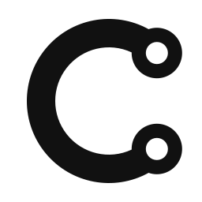
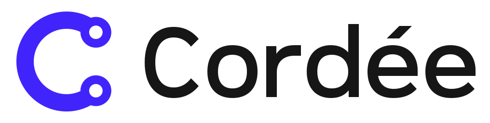
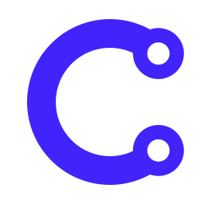
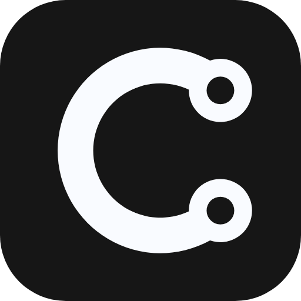
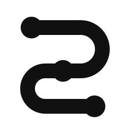
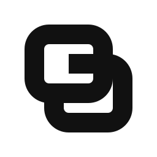

A · Le C d’attache — retenu
Une initiale mémorisable, deux boucles égales et un seul lien. Le signe garde son sens en une couleur.
Cordée · identité visuelle
Guide d’usage ↗

Accent #4124fb · mot #161616.
Un seul aplat, hérité de currentColor. Aucun effet nécessaire.

16 pxDe 16 à 64 px. Les deux œillets restent ouverts.
Blanc #f9fbff sur #161616. Géométrie identique.
Le symbole et le mot emploient exactement la même couleur.

Tuile #161616, coins arrondis, symbole blanc pour préserver le contraste.
Agrandissement sans lissage des vrais fichiers PNG.
Les contreformes sont de vrais évidements, sans caches blancs.
Lettrage original en tracés, accent compris.

Une initiale mémorisable, deux boucles égales et un seul lien. Le signe garde son sens en une couleur.

Trois points sur un fil continu. En petit, la forme évoque surtout un S ou un itinéraire.

Deux éléments se rejoignent. La silhouette est solide, mais la lecture de maillon reste plus générique.